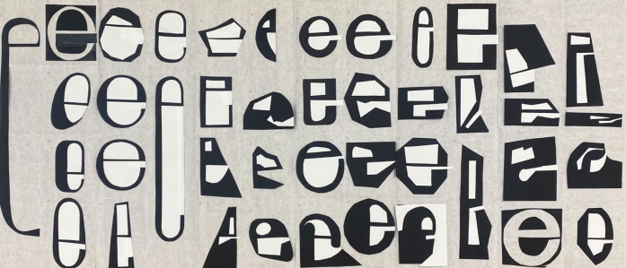

cutout is a variable display typeface designed and created by so jung yoon.
this project was initially inspired by manifontgroteskbook.ttf made by alexandre liziard, etienne
ozeary--curveless grotesk font. also reminded me of a workshop instructed by cyrus highsmith of cutting out
papers to make the letter -e-. this set me thinking about creating a typeface that can express cutting out
as a method to create letters.

typeface
typeface .tester
type whatever you want hereeee
cut
font size
letter spacing
contact
cutout is a display typeface that can be used in any sizes and also on the web. right now it is lowercase
only and interpolates between four styles. uppercase letters, special glyphs, and more variation axes are in
process and will be added to the website soon. feel free to email me if you want to test or use cutout-